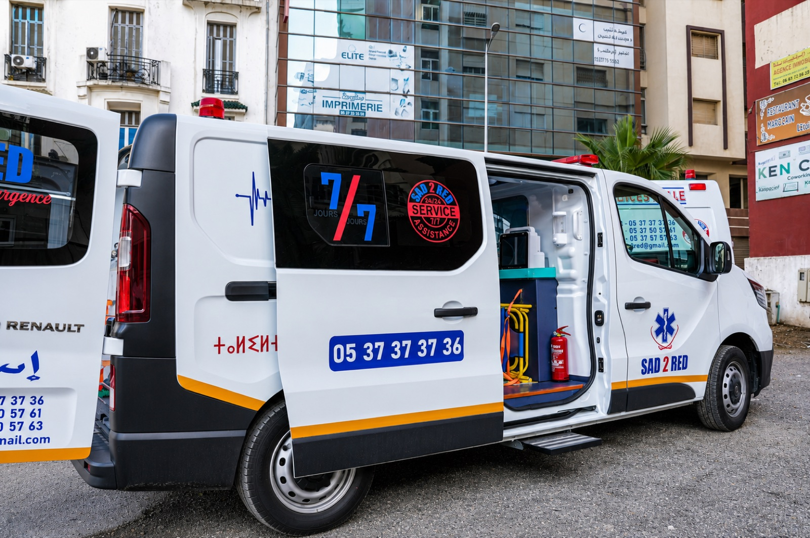
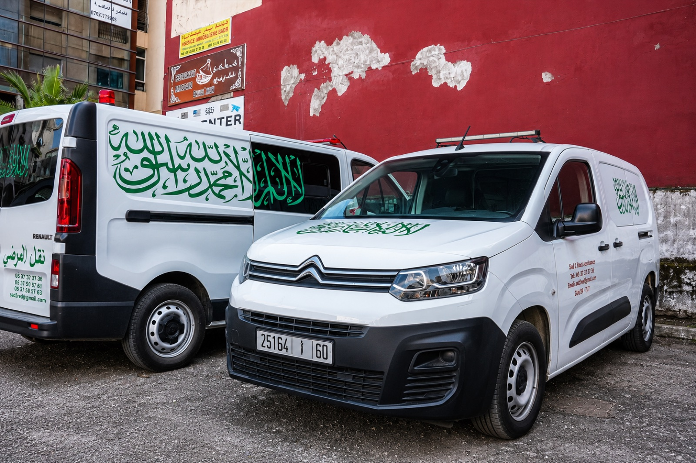
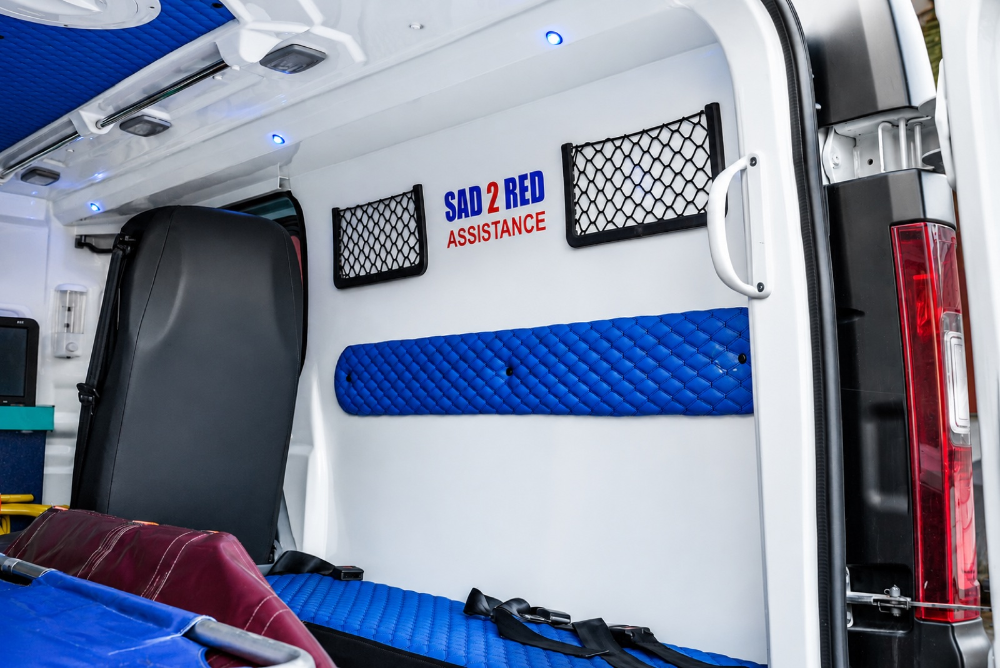

Demande de transport
Présentez votre situation et votre besoin de déplacement.
À confirmerAvant de nous contacter
Nous recueillons les informations utiles afin de vous orienter selon la situation et les possibilités disponibles.
Nos services
Les prestations proposées sont à confirmer avec SAD2RED avant toute demande.
Présentez votre situation et votre besoin de déplacement.
À confirmerHôpital à hôpital, domicile à hôpital, transport pour abonnement, dialyse ou chimiothérapie.
À confirmer avec SAD2REDNous sommes disponibles 24 h/24 et 7 j/7 pour répondre à vos questions.
Contact directSAD2RED — nos ambulances
Les détails opérationnels et les équipements sont à confirmer avec SAD2RED.



Conventions & partenaires
Réassurance